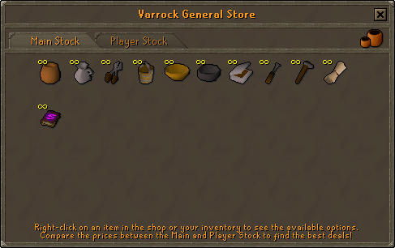
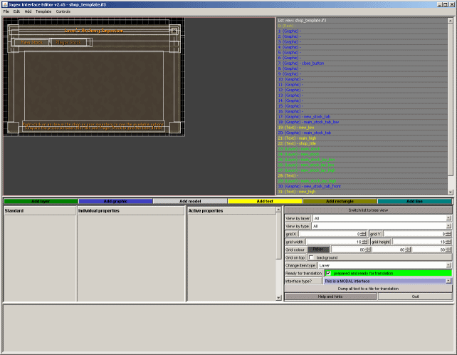

")
RuneScape Content Team - Game Improvements

RuneScape Content Team – Game Improvements
This Development Diary will focus on the Game Improvement Project. This project is made up of lots of small updates intended to improve the game – updates such as the Trade Window, Warning System (Doomsayer) and the appearance of magic logs. To start with we'll cover the reasoning behind why the project has come about and why it is happening now, then we'll look at the Shop Rework update as a specific example.
RuneScape revisited
It's all well and good releasing new content but old content sometimes needs to be reassessed. "It's true to say that our opinions regarding older content have changed dramatically over the years," says Mod Mark, Senior Creative Designer of the RuneScape Content team. He continues: "We're not daft enough to assume that we get things perfect with every update. We will continue making improvements indefinitely!"
"We take a fresh look at our development aims every 3-6 months"
 Mod Hobagoly
Mod Hobagoly
RuneScape Content
Indeed, RuneScape has been in a constant state of development ever since it was released, with regular content updates, being made more accessible and secure, moving with player trends, etc. The thought behind the Game Improvement Project is not a new one – similar projects include the NPC, Area and Quest Improvements – but releasing lots of these smaller updates together is. The main reason for releasing so many little updates at the same time was to draw more attention to them (to show you that we are listening) and to encourage even more feedback. Mod Mark says, "Also, the technologies available to us are far greater now, as are our resources. We now have a team big enough to look at these sorts of improvements as well as maintaining a healthy update schedule."
All of the improvement projects are the result of a change in focus here at Jagex. Mod Hobagoly, Head of RuneScape Content, sums it up: "We take a fresh look at our development aims every 3-6 months. In the latest review, we decided that our aims as a company and for RuneScape should involve a greater level of communication with our players." Listening more to what players want is a huge part of this more open stance, as are the new Polls (including Guaranteed Content polls) and these very Development Diaries. "We have built up a massive list of possible improvements based upon ideas collected from the forums," Mod Hobagoly continues.
With the decision made that we wanted to group together changes into this Game Improvement Project, and having a big list of possible things to be a part of it, the first step involved a brainstorming meeting between Andrew (Lead Developer), Paul (Senior Game Designer), Mod Hobagoly and Mod Mark, to discuss all the potential ideas and select those that were possible. Once this was done, the individual parts of the Game Improvement project were handed to members of the RuneScape Content team.

An image showing both tabs of the new shop interface.
Shop renovations
"With the Shop Rework it was simply an issue of us recognising that the shops did not work in the way that we wanted them to, and deciding how to change them so they did," says Mod Mark. The Shop Rework was given to Mod Tim, who says, "I was given the concept, reasons and aims of the project – one tab for infinite stock and one tab for player stock – and went about writing the specifics of my brief from there." Each developer that was given part of the Game Improvement Project to do also had to write a brief – yes, even for something as apparently simple as changing the appearance of magic logs.
The brief was discussed, adjusted and rewritten many times, until the best possible solution to the problem was reached. "The way the change was made, in some ways was the only way it could have been made," says Mod Tim, which helped to confirm it was the right solution. "After the brief was finalised, I created mock ups of the shop interface, which allowed me to visualise how it needed to work from a technical viewpoint," he says. "I then commissioned Mod Linh on the Graphics team to redesign the shops interface to accommodate the new features."
"There were 362 calls to the shop code, 298 of them for unique shops."
Mod Rathe
Quality Assurance
With such an embedded element as the shop interface – i.e., one that has been in the game for such a long time – it had to work in much the same way as it used to, as it is something used by almost every player. It still provided the opportunity to improve how it looked, though. Mod Linh says, "I used the old design and Mod Tim's mock-ups as a blueprint to make the interface better, creating the design in a graphics editor before cutting it up and putting it into our interface editor. The form of 2D pixel art used is quite specialised – you need to get every pixel right."
All of this happened before a single line of code was touched. "One of the difficult parts of this update was finding all of the different shops in the code," Mod Tim says. "I also had to figure out a way to change all the shops in the game at the same time without breaking things, as that would have affected other developers." There aren't just challenges involved in changing older elements of the game, there are also opportunities to tidy up old code. Mod Tim carries on, saying, "In moving from the old code for shops to the new way shops work, I wanted to write just one piece of script that would work for all shops, so it would work more efficiently and be easier to change in future, if we ever needed to."
After the changes were made, the Shop Rework didn't just go to the Quality Assurance (QA) team - it was also checked by Mod Mark, Paul and forum-favourite Mod Ash (Upload Manager). "While the Shop Rework was a relatively small project for me to develop, it's the sort of thing that requires a huge amount of input from the QA team," says Mod Tim.
Indeed, QA's involvement was both before and after the coding was done. "Mod Tim had done a search through the code, but we had to go through them all to see which ones were duplicates, what the shops were called, note where they were in the code, any requirements to use them... There were 362 calls to the shop code, 298 of them for unique shops," says QA's Mod Rathe. He continues: "We then checked any stock in those shops that would cause problems for the economy, if they were made available in infinite quantities, and researched what the prices should be for the rest. One of the main things was runes: runes had to be infinite, but priced sensibly so we didn't destroy Runecrafting or detriment merchants."
Then, after the coding was done, the content was thoroughly tested. Mod Chris L found many obscure bugs at this stage. "I found things like buying items faster than the server could handle, problems with buying stackable items with a full inventory, issues with the decreasing sale price when selling masses of items at once," he says. Mod Rathe concludes with, "It was quite daunting to begin with, just because of the sheer magnitude - all those shops and items - and the importance in needing to get it right. It took a long time, but we did it."

The new shop interface, being built in our in-house software.
Constant change
"The Shop Rework is a good example of where an old piece of content has been superseded and is no longer suitable," says Mod Hobagoly. RuneScape is constantly changing and growing, as are the types of players it attracts and the play styles they use. We're making these game improvements to keep the game fair and secure, to make it more playable and to polish the minor annoyances that mar all our players' fun.
We want our players to be free to enjoy RuneScape however they wish, as long as it doesn't stop other players from enjoying themselves too. Mod Mark clarifies this: "A small number of players would stay at shops for a long time just buying goods, which they would then sell on to other players for a profit." He continues with, "Collecting goods using skills can take time, so shops were originally intended as a quick but expensive alternative, but it has in fact become a slow, expensive alternative in some cases, say when a shop's entire stock has already been bought out." With access to infinite stocks, players can have that faster, expensive option of getting the items they need, so they can spend more time killing dragons or PKing than standing around in a shop, something which is not exactly fun.
It is impossible to please every single player at the same time. As such, the decisions we make are based on what is best for the game and for the majority of players (which does not always mean the lower-level players). Mod Mark says, "There will be some players that feel the Shop Rework update is just us wanting to take away their source of gold pieces, however, it is simply that shops were not filling their intended role in the game. The average player should not be greatly affected by this update."

More articles in
Development Diaries
|
|